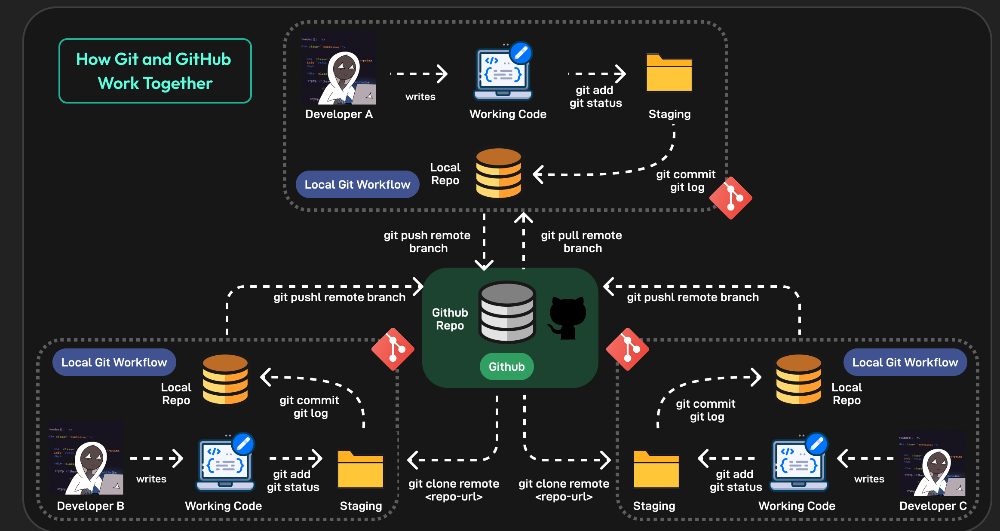

Information and Communication Technologies (TIC) are tools used to create, store, share, and manage information. TIC is essential in education, business, and daily life.
TIC improves communication, access to information, and productivity. It allows people to work and learn more efficiently.
Google provides services such as Gmail, Google Drive, and Google Docs, which help users communicate and collaborate online.
| Google Service | Description | Use |
|---|---|---|
| Google Search | Search engine for finding information online | Research and learning |
| Gmail | Email service | Communication |
| Google Drive | Cloud storage service | Store and share files |
| Google Docs | Online word processor | Create and edit documents |
| Google Sheets | Online spreadsheet tool | Data organization and calculations |
| Google Slides | Online presentation tool | Create presentations |

Microsoft tools like Word, Excel, PowerPoint, and Teams are widely used in schools and workplaces.
| Feature | Microsoft Word | Microsoft Excel | Microsoft PowerPoint |
|---|---|---|---|
| Main Purpose | Word processing, creating documents, and reports. | Data organization, analysis, and visualization. | Creating presentations with slides and visuals. |
| Common Use Cases | Writing essays, letters, reports, and newsletters. | Managing data, creating graphs, performing calculations. | Creating slideshows, business presentations, and lectures. |
| File Extensions | .docx, .doc | .xlsx, .xls | .pptx, .ppt |

Git is a version control system, and GitHub is a platform for hosting and sharing code. They are important tools in software development.
A version control system is software that tracks changes to a file or set of files over time so that you can recall specific versions later. It also allows you to work together with other programmers.

TIC has changed how people communicate and work. Learning about TIC tools is essential in the modern digital world.